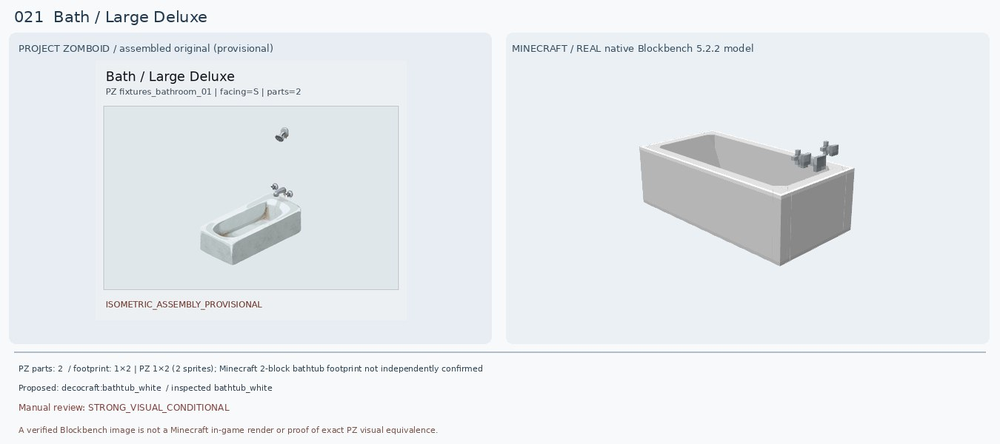
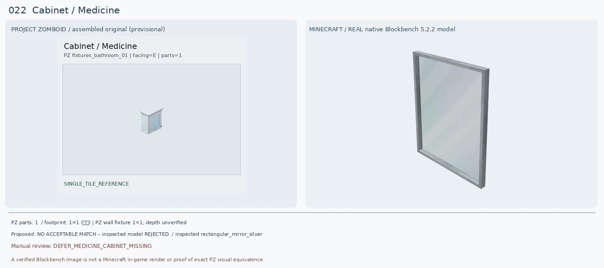
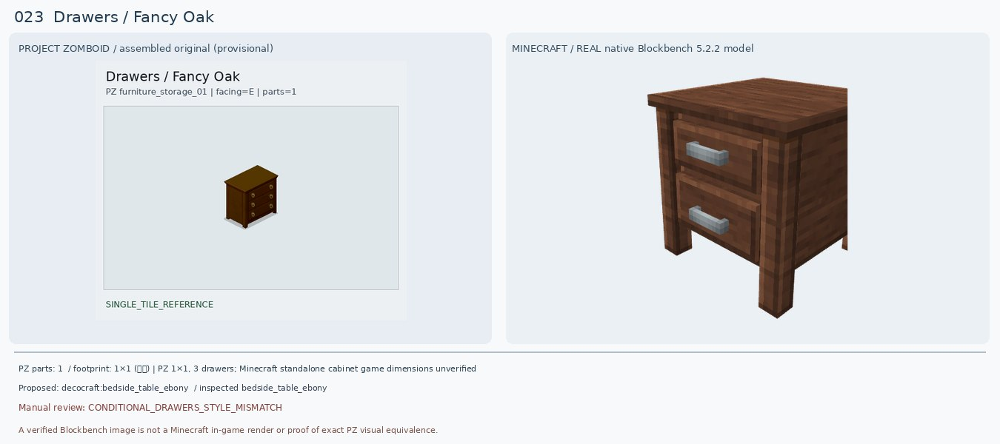
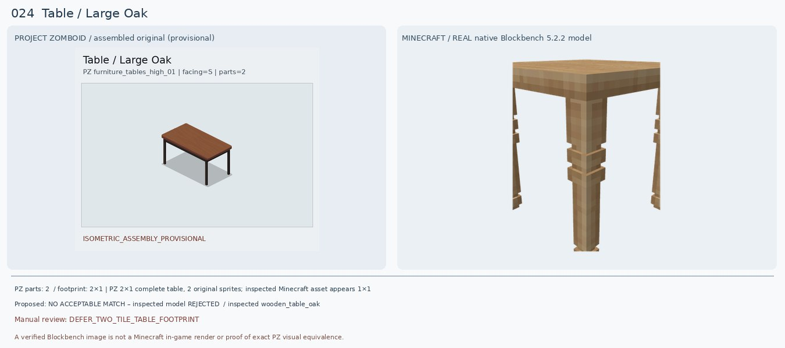
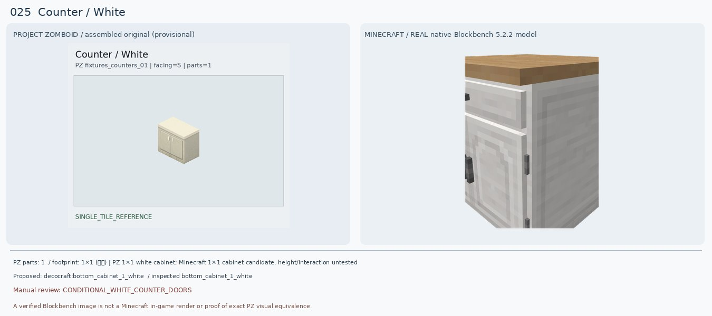
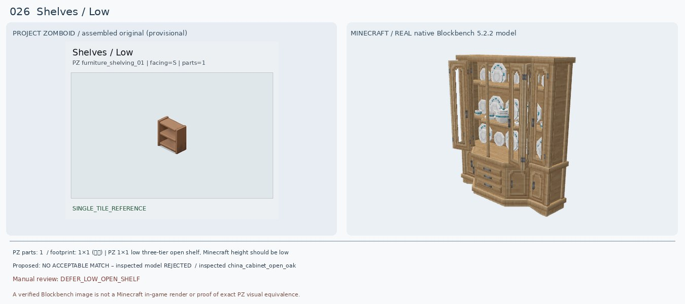
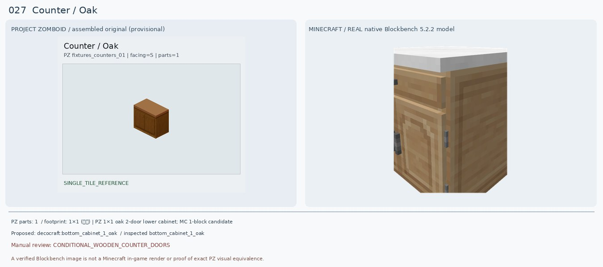
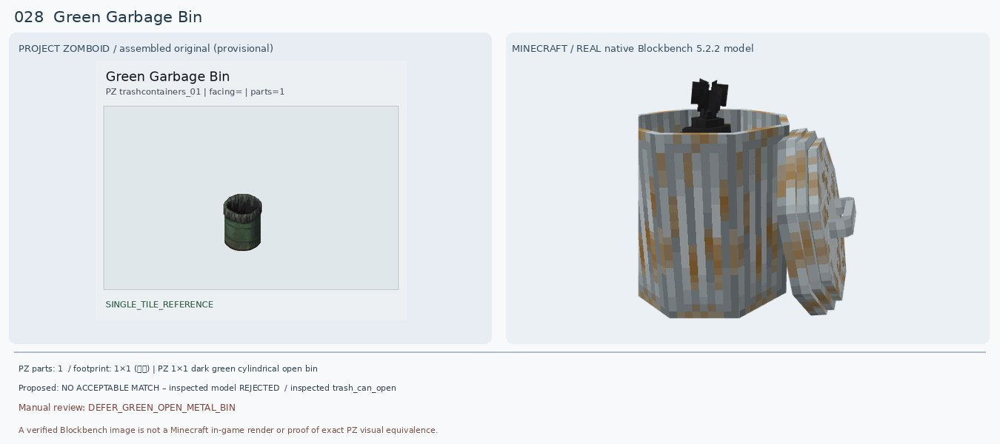
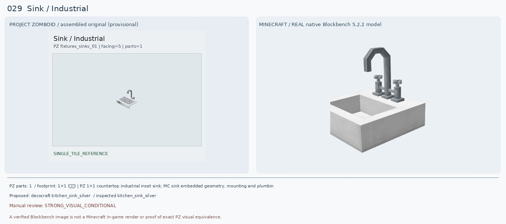
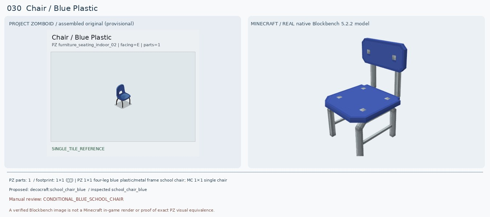

Bath / Large Deluxe
검수: STRONG_VISUAL_CONDITIONAL
실제 선정 후보: decocraft:bathtub_white
실제로 렌더해 비교한 모델: decocraft:bathtub_white
다른 후보: decocraft:bathtub_clawfoot_silver
크기: PZ 1×2 (2 sprites); Minecraft 2-block bathtub footprint not independently confirmed
원본 외형: White rectangular recessed bathtub with chrome end faucet; multi-tile assembled
판정 이유: 원본 PZ는 두 타일로 구성되는 긴 흰색 욕조. Decocraft Bathtub White는 하얀 사각 욕조·내부 공간·끝 수전 모양이 매우 가깝다. 단 PZ 조립 프리뷰에 떨어져 보이는 수도꼭지 한 조각은 조립 미확정이므로 시각 검수 전 수정 필요. MC 실제 배치 면적과 연결 기능은 미확인.
다음 조치: PZ SpriteGridPos 두 부품의 수도꼭지 중첩/조립 좌표 재검증. 실제 마크 설치 폭과 수도 기능 확인.
PZ 원본 메타데이터
{"BlocksPlacement": [""], "CanScrap": [""], "CustomName": ["Bath"], "Facing": ["S"], "GroupName": ["Large Deluxe"], "IsGridExtensionTile": [""], "IsMoveAble": [""], "ItemHeight": ["22"], "Material": ["Plumbing"], "Material2": ["Pipes"], "PickUpTool": ["Wrench"], "PickUpWeight": ["100"], "PlaceTool": ["Wrench"], "SpriteGridPos": ["0,0", "0,1"], "solidtrans": [""], "waterAmount": ["100"], "waterMaxAmount": ["100"], "waterPiped": [""]}
Cabinet / Medicine
검수: DEFER_MEDICINE_CABINET_MISSING
실제 선정 후보: 없음 — 후속 검토
실제로 렌더해 비교한 모델: decocraft:rectangular_mirror_silver
다른 후보: decocraft:middle_cabinet_white
크기: PZ wall fixture 1×1; depth unverified
원본 외형: Small white wall-mounted mirrored medicine CABINET with opening/storage body
판정 이유: PZ는 옆면 깊이와 작은 문/손잡이가 있는 벽걸이 약품장. 실제 Decocraft Rectangular Mirror Silver는 거울뿐이라 수납 몸체가 없다. Middle Cabinet White는 몸체만 있고 거울이 없다. 둘 모두 원본의 문+거울+수납 기능을 동시에 갖추지 못하므로 기존 Macaw 주방장 매칭도 반려하고 보류.
다음 조치: Minecraft 1.20.1 Forge 욕실 모드의 거울문 약품장 실제 모델 추가 검색. 바닐라 거울 대안만으로 기능 대체 금지.
PZ 원본 메타데이터
{"CanBreak": [""], "CanScrap": [""], "ContainerCapacity": ["10"], "ContainerCloseSound": ["DoorWoodSmallClose"], "ContainerOpenSound": ["DoorWoodSmallOpen"], "ContainerPosition": ["High"], "ContainerPutSound": ["DoorWoodSmallTransferItem"], "ContainerTakeSound": ["DoorWoodSmallTransferItem"], "CustomName": ["Cabinet"], "Facing": ["E"], "GroupName": ["Medicine"], "IsHigh": [""], "IsMirror": [""], "IsMoveAble": [""], "Material": ["Wood"], "Material2": ["Mirror"], "MoveType": ["WallObject"], "PickUpLevel": ["2"], "PickUpTool": ["Hammer"], "PickUpWeight": ["100"], "PlaceTool": ["Hammer"], "ScrapSize": ["Small"], "Surface": ["80"], "attachedW": [""], "container": ["medicine"]}
Drawers / Fancy Oak
검수: CONDITIONAL_DRAWERS_STYLE_MISMATCH
실제 선정 후보: decocraft:bedside_table_ebony
실제로 렌더해 비교한 모델: decocraft:bedside_table_ebony
다른 후보: decocraft:modular_desk_drawers_oak
크기: PZ 1×1, 3 drawers; Minecraft standalone cabinet game dimensions unverified
원본 외형: Dark polished wood chest with three stacked drawers and small round brass pulls
판정 이유: 원본은 진갈색 캐비닛형 3단 서랍장과 황동 원형 손잡이. Bedside Table Ebony는 2단 서랍장으로 어두운 갈색 톤·4다리는 비슷하지만 서랍 개수, 손잡이 모양, 가구 높이가 다르다. Modular Desk Drawers Oak도 2단에 색상이 밝아 대안으로만 기록.
다음 조치: 다른 모드의 진갈색 3단 서랍장 1×1 모델 탐색. 현재 2단 모델 최종 승인 금지.
PZ 원본 메타데이터
{"BlocksPlacement": [""], "CanBreak": [""], "CanScrap": [""], "ContainerCapacity": ["20"], "ContainerCloseSound": ["DrawerWoodClose"], "ContainerOpenSound": ["DrawerWoodOpen"], "ContainerPutSound": ["DrawerWoodTransferItem"], "ContainerTakeSound": ["DrawerWoodTransferItem"], "CustomName": ["Drawers"], "Facing": ["E"], "GroupName": ["Fancy Oak"], "IsLow": [""], "IsMoveAble": [""], "IsTable": [""], "Material": ["Wood"], "Material2": ["Screws"], "PickUpLevel": ["2"], "PickUpTool": ["Hammer"], "PickUpWeight": ["100"], "PlaceTool": ["Hammer"], "ScrapSize": ["Small"], "Surface": ["34"], "container": ["dresser"], "solidtrans": [""]}
Table / Large Oak
검수: DEFER_TWO_TILE_TABLE_FOOTPRINT
실제 선정 후보: 없음 — 후속 검토
실제로 렌더해 비교한 모델: decocraft:wooden_table_oak
다른 후보: decocraft:kitchen_table_oak
크기: PZ 2×1 complete table, 2 original sprites; inspected Minecraft asset appears 1×1
원본 외형: Long rectangular medium brown tabletop supported by four thin dark legs
판정 이유: 원본 완성형 테이블은 2개 타일로 연결된 길쭉한 직사각 탁자이며 가느다란 검은 다리 네 개가 있다. Decocraft Wooden Table Oak는 목재 단색 1×1 정사각 탁자에 굵고 장식적인 다리라 비율·재질·부피가 다르다. Kitchen Table Oak도 흰 상판이므로 부적합. 기존 Macaw Oak Table의 큐브형 렌더 역시 원본과 불일치.
다음 조치: 2×1 직사각 연결 테이블 모드, 멀티블록 테이블 조립 규칙, 또는 바닐라 진한 반블록+지지대 배치 가능성(블록 높이 충돌 포함) 검증.
PZ 원본 메타데이터
{"BlocksPlacement": [""], "CanScrap": [""], "CustomName": ["Table"], "Facing": ["S"], "GenericCraftingSurface": ["true"], "GroupName": ["Large Oak"], "IsLow": [""], "IsMoveAble": [""], "IsTable": [""], "Material": ["Nails"], "Material2": ["Wood"], "PickUpWeight": ["100"], "ScrapSize": ["Small"], "SpriteGridPos": ["0,0", "1,0"], "Surface": ["34"], "solidtrans": [""]}
Counter / White
검수: CONDITIONAL_WHITE_COUNTER_DOORS
실제 선정 후보: decocraft:bottom_cabinet_1_white
실제로 렌더해 비교한 모델: decocraft:bottom_cabinet_1_white
다른 후보: decocraft:bottom_cabinet_2_white
크기: PZ 1×1 white cabinet; Minecraft 1×1 cabinet candidate, height/interaction untested
원본 외형: Off-white 2-door cabinet with full light top and two thin vertical handles
판정 이유: 원본은 크림색 두 문짜리 카운터. Decocraft Bottom Cabinet 1 White는 흰색 몸체가 가깝지만 위 한 서랍+아래 한 문, 상판 목재색이라 2도어 크림색 원본과 차이. Bottom Cabinet 2 White는 서랍 4개라 더 나쁨. 기존 1 White를 조건부 후보로만 유지.
다음 조치: 크림/연회색 2도어 낮은 하부장 모드 신규 검색 또는 다른 white cabinet 변형 확인.
PZ 원본 메타데이터
{"BlocksPlacement": [""], "CanBreak": [""], "CanScrap": [""], "ContainerCloseSound": ["DoorWoodMediumClose"], "ContainerOpenSound": ["DoorWoodMediumOpen"], "ContainerPosition": ["Low"], "ContainerPutSound": ["DoorWoodMediumTransferItem"], "ContainerTakeSound": ["DoorWoodMediumTransferItem"], "CountertopAttach": [""], "CustomName": ["Counter"], "Facing": ["S"], "GenericCraftingSurface": ["true"], "GroupName": ["White"], "IsLow": [""], "IsMoveAble": [""], "IsTable": [""], "Material": ["Wood"], "Material2": ["Nails"], "PickUpLevel": ["2"], "PickUpTool": ["Hammer"], "PickUpWeight": ["100"], "PlaceTool": ["Hammer"], "Surface": ["35"], "container": ["counter"], "solidtrans": [""]}
Shelves / Low
검수: DEFER_LOW_OPEN_SHELF
실제 선정 후보: 없음 — 후속 검토
실제로 렌더해 비교한 모델: decocraft:china_cabinet_open_oak
다른 후보: handcrafted:acacia_shelf
크기: PZ 1×1 low three-tier open shelf, Minecraft height should be low
원본 외형: Small light oak 3-level open shelving with visible bare horizontal shelves, no door/glass
판정 이유: 원본은 높이가 낮은 개방형 목재 3단 선반. Decocraft China Cabinet Open Oak는 거대한 유리문/접시/서랍이 붙은 장식장이라 종류가 다르다. 기존 Handcrafted Acacia Shelf는 실제 렌더가 원본과 달리 전면이 막힌 진열장 형태로 나와 승인 불가.
다음 조치: Wan Storage Shelves의 낮은 오크 3단 조립형 실제 모델, 바닐라 덫문/계단 수평 선반 조합의 블록 충돌과 높이, 다른 선반 모드 확인.
PZ 원본 메타데이터
{"BlocksPlacement": [""], "CanBreak": [""], "CanScrap": [""], "ContainerCapacity": ["20"], "ContainerPosition": ["Low"], "ContainerPutSound": ["ShelfWoodTransferItem"], "ContainerTakeSound": ["ShelfWoodTransferItem"], "CustomName": ["Shelves"], "Facing": ["S"], "GroupName": ["Low"], "IsLow": [""], "IsMoveAble": [""], "IsTable": [""], "Material": ["Wood"], "Material2": ["Screws"], "PickUpWeight": ["100"], "ScrapSize": ["Small"], "Surface": ["33"], "container": ["shelves"], "solidtrans": [""]}
Counter / Oak
검수: CONDITIONAL_WOODEN_COUNTER_DOORS
실제 선정 후보: decocraft:bottom_cabinet_1_oak
실제로 렌더해 비교한 모델: decocraft:bottom_cabinet_1_oak
다른 후보: decocraft:bottom_cabinet_2_oak
크기: PZ 1×1 oak 2-door lower cabinet; MC 1-block candidate
원본 외형: Warm medium brown oak lower kitchen cabinet with TWO front doors and plain brown slab countertop
판정 이유: 원본은 중간 갈색 오크 2도어 캐비닛과 갈색 목제 상판. Bottom Cabinet 1 Oak는 목재 색감은 가깝지만 상판 흰색, 상단 서랍+하부 단문 구성이며 Bottom Cabinet 2 Oak는 4단 서랍이라 더 부적합. 기존 Macaw Dark Oak Counter는 어두운 직육면체라 더 멀어 조건부 1 Oak로 교체 제안.
다음 조치: 오크 2도어·갈색 상판 세트 모드에서 다시 검색. 다중 문 구조 필요.
PZ 원본 메타데이터
{"BlocksPlacement": [""], "CanBreak": [""], "CanScrap": [""], "ContainerCloseSound": ["DoorWoodMediumClose"], "ContainerOpenSound": ["DoorWoodMediumOpen"], "ContainerPosition": ["Low"], "ContainerPutSound": ["DoorWoodMediumTransferItem"], "ContainerTakeSound": ["DoorWoodMediumTransferItem"], "CountertopAttach": [""], "CustomName": ["Counter"], "Facing": ["S"], "GenericCraftingSurface": ["true"], "GroupName": ["Oak"], "IsLow": [""], "IsMoveAble": [""], "IsTable": [""], "Material": ["Wood"], "Material2": ["Nails"], "PickUpLevel": ["2"], "PickUpTool": ["Hammer"], "PickUpWeight": ["100"], "PlaceTool": ["Hammer"], "Surface": ["35"], "container": ["counter"], "solidtrans": [""]}
Green Garbage Bin
검수: DEFER_GREEN_OPEN_METAL_BIN
실제 선정 후보: 없음 — 후속 검토
실제로 렌더해 비교한 모델: decocraft:trash_can_open
다른 후보: decocraft:waste_basket_black
크기: PZ 1×1 dark green cylindrical open bin
원본 외형: Open-top dark green solid metal cylinder with black liner and horizontal pressed hoops
판정 이유: PZ 원본은 짙은 초록색 원통 몸체와 검정 테두리 비닐이 있는 개방 쓰레기통. Decocraft Trash Can Open은 회색 골판형 큰 쓰레기통으로 뚜껑이 옆에 떨어져 있으며 검정 격자 바구니는 철망형이라 외형이 달라. 기존 Paladin Mesh Trashcan도 격자·초록 배경이 뒤엉킨 부분 렌더로 승인 불가.
다음 조치: 1.20.1 Forge에서 초록색 솔리드 개방형 금속 쓰레기통/산업용 빈 실제 모델 탐색. 정확 색상 변형 확인.
PZ 원본 메타데이터
{"BlocksPlacement": [""], "CanScrap": [""], "ContainerCapacity": ["20"], "ContainerPutSound": ["BinMetalTransferItem"], "ContainerTakeSound": ["BinMetalTransferItem"], "CustomItem": ["Base.Mov_GreenGarbageBin"], "CustomName": ["Green Garbage Bin"], "IsLow": [""], "IsMoveAble": [""], "IsTrashCan": [""], "Material": ["MetalScrap"], "Material2": ["PlasticBag"], "PickUpWeight": ["100"], "container": ["bin"], "solidtrans": [""]}
Sink / Industrial
검수: STRONG_VISUAL_CONDITIONAL
실제 선정 후보: decocraft:kitchen_sink_silver
실제로 렌더해 비교한 모델: decocraft:kitchen_sink_silver
다른 후보: decocraft:square_sink_silver
크기: PZ 1×1 countertop industrial inset sink; MC sink embedded geometry, mounting and plumbing untested
원본 외형: White/light gray rectangular inset industrial sink with tall curved chrome faucet and small controls
판정 이유: PZ 원본은 얕은 네모 물받이와 높게 굽은 금속 수도꼭지. Decocraft Kitchen Sink Silver 모델은 사각 물받이·높은 호스형 수전·금속 색상이 꽤 닮았다. Square Sink Silver도 유사하지만 베이슨 형태가 다르므로 전자를 우선. 원본은 독립 받침 없는 인셋형이라 싱크 하부 조합 공간이 맞는지 필요.
다음 조치: 바닥/카운터와 겹치지 않는 모델 배치와 물 공급/상호작용 확인.
PZ 원본 메타데이터
{"CanBreak": [""], "CanScrap": [""], "CustomName": ["Sink"], "Facing": ["S"], "GroupName": ["Industrial"], "IsMoveAble": [""], "IsSurfaceOffset": [""], "IsTableTop": [""], "Material": ["Plumbing"], "Material2": ["Pipes"], "Material3": ["Sink"], "PickUpTool": ["Wrench"], "PickUpWeight": ["50"], "PlaceTool": ["Wrench"], "ScrapSize": ["Small"], "SinkType": ["Ceramic"], "Surface": ["34"], "attachedSurface": [""], "waterAmount": ["20"], "waterMaxAmount": ["20"], "waterPiped": [""]}
Chair / Blue Plastic
검수: CONDITIONAL_BLUE_SCHOOL_CHAIR
실제 선정 후보: decocraft:school_chair_blue
실제로 렌더해 비교한 모델: decocraft:school_chair_blue
다른 후보: decocraft:diner_chair_blue
크기: PZ 1×1 four-leg blue plastic/metal frame school chair; MC 1×1 single chair
원본 외형: Blue molded one-piece plastic curved back with cutout handle and blue seat on black curved metal legs
판정 이유: PZ는 등받이 중앙에 손잡이 구멍이 뚫린 파란 플라스틱 의자와 검정 가는 금속 다리. School Chair Blue는 파란 시트·등받이·금속 다리 구성이 맞지만 등받이가 네모이고 손잡이 대신 회색 박음점, 좌석이 직사각이라 상당한 차이. Diner Chair Blue는 흰 줄무늬가 있어 더 멀다. 조건부만.
다음 조치: 플라스틱 손잡이 구멍이 있는 학교/회의실 의자 모델 추가 모드 탐색.
PZ 원본 메타데이터
{"BedType": ["badBed"], "BlocksPlacement": [""], "CanScrap": [""], "CustomName": ["Chair"], "Facing": ["E"], "GroupName": ["Blue Plastic"], "IsLow": [""], "IsMoveAble": [""], "Material": ["MetalBars"], "Material2": ["PlasticHard"], "MaterialType": ["Plastic"], "PickUpWeight": ["75"], "ScrapSize": ["Small"], "SeatMaterial": ["Plastic"], "Surface": ["17"], "bed": [""], "chairE": [""]}